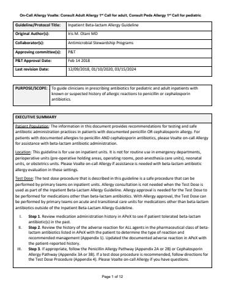

Hosted on idmp.ucsf.edu, no login. 12 pages, 1432 KB
Guideline/Protocol Title: | Inpatient Beta-lactam Allergy Guideline |
Original Author(s): | Iris M. Otani MD |
Collaborator(s): | Antimicrobial Stewardship Programs |
Approving committee(s): | P&T |
P&T Approval Date: | Feb 14 2018 |
Last revision Date: | 12/09/2018, 01/10/2020, 03/15/2024 |
PURPOSE/SCOPE: | To guide clinicians in prescribing antibiotics for pediatric and adult inpatients with known or suspected history of allergic reactions to penicillin or cephalosporin antibiotics. |
EXECUTIVE SUMMARY |
Patient Population: The information in this document provides recommendations for testing and safe antibiotic administration practices in patients with documented penicillin OR cephalosporin allergy. For patients with documented allergies to penicillin AND cephalosporin antibiotics, please Voalte on-call Allergy for assistance with beta-lactam antibiotic administration. Location: This guideline is for use on inpatient units. It is not for routine use in emergency departments, perioperative units (pre-operative holding areas, operating rooms, post-anesthesia care units), neonatal units, or obstetrics units. Please Voalte on-call Allergy if assistance is needed with beta-lactam antibiotic allergy evaluation in these settings. Test Dose: The test dose procedure that is described in this guideline is a safe procedure that can be performed by primary teams on inpatient units. Allergy consultation is not needed when the Test Dose is used as part of the Inpatient Beta-Lactam Allergy Guideline. Allergy approval is needed for the Test Dose to be performed for medications other than beta-lactam antibiotics. With Allergy approval, the Test Dose can be performed by primary teams on acute and transitional care units for medications other than beta-lactam antibiotics outside of the Inpatient Beta-Lactam Allergy Guideline.
On-Call Allergy Voalte: Consult Adult Allergy 1st Call and Consult Peds Allergy 1st Call |
BACKGROUND / INTRODUCTION |
Most patients with documented penicillin allergy do not have an active allergy [1]. Additionally, cross-reactivity rates between different beta-lactam antibiotics are low, and patients with testing-verified penicillin allergy can still safely receive many cephalosporins and all carbapenems [1]. Over-cautious avoidance of first-line beta-lactam antibiotics in patients with a documented penicillin has significant negative clinical impact. Inpatients with reported penicillin allergy have longer hospital stays, receive more alternative antibiotics, and have more drug-resistant infections [2]. A beta-lactam allergy guideline with recommendations for which antibiotics are safe to prescribe in patients with beta-lactam allergy can improve patient care by allowing these patients to receive more effective, less toxic, and/or less costly antibiotics [3]. The UCSF guideline has been approved since Feb 2018, and has had a significant positive impact on antibiotic prescribing practices [4]. Note: Although beta-lactam antibiotic allergy evaluations are recommended, use of this guideline should not delay care of an active infection. An alternative antibiotic per the primary team or Infectious Disease should be administered to treat active infection even if beta-lactam allergies have not been addressed. |
SUPPORTING EVIDENCE |
Penicillin Allergy (PA) Pathway – Appendix 2. Please see 2A for adult patients and 2B for pediatric patients.
Cephalosporin Allergy (CA) Pathway – Appendix 3. Please see 3A for adult patients and 3B for pediatric patients.
Definitions Beta-lactam antibiotics: antibiotics who chemical structure consists of a core beta-lactam ring with side chains – penicillin, cephalosporin, monobactam, carbapenem antibiotics Side chains: component of chemical structure of beta-lactam antibiotics that can be identical/similar or unique between certain beta-lactam antibiotics Adverse drug reaction: any adverse event due to pharmacologic effects of the drug Allergic reaction: adverse drug reaction mediated by IgE activation of allergy cells (mast cells, basophils) Type II-IV reaction: adverse drug reaction mediated by cells and proteins of the immune system but not involving IgE activation of allergy cells PEN-FAST: validated scoring system that identifies low-risk penicillin allergies that do not require formal allergy testing [6] |
APPENDIX |
Appendix 1: Determining the Type of Reaction and Recommended Management Appendix 2A: Penicillin Allergy (PA) Pathway – Adult Appendix 2B: Penicillin Allergy (PA) Pathway – Pediatric Appendix 3A: Cephalosporin Allergy (CA) Pathway – Adult Appendix 3B: Cephalosporin Allergy (CA) Pathway - Pediatric Appendix 4: Test Dose Procedure Appendix 5: Cross-Reactivity of Penicillin and Cephalosporin Antibiotics on Formulary at UCSF |
Reference # | Citation |
1 | Khan DA, Banerji A, Blumenthal KG, et al. Drug allergy: A 2022 practice parameter update. J Allergy Clin Immunol. 2022 Dec;150(6):1333-1393. PMID: 36122788. |
2 | Macy E, Contreras R. Health care use and serious infection prevalence associated with penicillin “allergy” in hospitalized patients: A cohort study. J Allergy Clin Immunol. 2014 Mar;133(3):790-6. PMID: 24188976. |
3 | Blumenthal KG, Shenoy ES, Varughese CA, et al. Impact of a clinical guideline for prescribing antibiotics to inpatients reporting penicillin or cephalosporin allergy. Ann Allergy Asthma Immunol. 2015 Oct;115(4):294-300.e2. PMID: 26070805 |
4 | Otani IM, Tang M, Wang L, …, Doernberg SB. Impact of an Inpatient Allergy Guideline on β-Lactam and Alternative Antibiotic Use. J Allergy Clin Immunol Pract. 2023 Aug;11(8):2557-2567.e6. PMID: 37182569. |
5 | Solensky R, Macy E. Minor determinants are essential for optimal penicillin allergy testing: a pro/con debate. J Allergy Clin Immunol Pract. 2015 Nov-Dec;3(6):883-7. PMID: 26164809. |
6 | Trubiano JA, Vogrin S, Chua KYL, et al. Development and Validation of a Penicillin Allergy Clinical Decision Rule. JAMA Intern Med. 2020 May 1;180(5):745-752. PMID: 32176248 |
7 | Blumenthal KG, Shenoy ES, Wolfson AR, et al. Addressing Inpatient Beta-Lactam Allergies: A Multihospital Implementation. J Allergy Clin Immunol Pract. 2017 May-Jun;5(3):616-625.e7. PMID: 28483315 |
Revision History | |
Revision Date | Update(s) |
12/09/2018 |
|
01/10/2020 |
|
04/05/2024 |
|
Appendix 1: Determining the Type of Reaction and Recommended Management

*SJS/TEN = Stevens-Johnson Syndrome / Toxic Epidermal Necrolysis; †DRESS/DISH = Drug-Induced Systemic Hypersensitivity/Drug Rash Eosinophilia and Systemic Symptoms
Appendix 2A: Penicillin Allergy (PA) Pathway - Adult

Appendix 2B: Penicillin Allergy (PA) Pathway – Pediatric
Appendix 3A: Cephalosporin Allergy (CA) Pathway – Adult

Appendix 3B: Cephalosporin Allergy (CA) Pathway – Pediatric

Appendix 4: Test Dose Procedure
The ‘Adult Drug Test Dose Allergy Evaluation’ and ‘Pediatric Drug Test Dose Allergy Evaluation’ order sets available in APeX include the necessary orders for the Test Dose Procedure. If the primary team has question or concerns after reading Appendix 4, please Voalte on-call Allergy (Consult Adult Allergy 1st Call and Consult Peds Allergy 1st Call).
During the Test Dose Procedure, the patient receives a test dose (1/10th of full standard treatment dose). After 30 minutes, if the patient remains asymptomatic, the patient receives the full dose. The patient is monitored for 60 more minutes to ensure that they tolerate the medication. Appropriate precautions for the procedure are outlined below.
If a patient tolerates a medication administered using the Test Dose Procedure, it confirms that the patient can tolerate the drug without developing an allergic reaction (i.e., a Type I, IgE-mediated immediate hypersensitivity reaction). The primary team can order ongoing antibiotic therapy using standard scheduled doses of this medication.
If a reaction occurs during the Test Dose Procedure, follow the Action Plan for RN table and Voalte on-call Allergy. Order and draw a tryptase level within 1-2 hours after a possible allergic reaction.
Please document the results (medication tolerated or not tolerated) in the free text comments of the documented allergy in APeX after the Test Dose Procedure is completed (as per Appendix 2A/B and Appendix 3A/B).
Test Dose Procedure Orders
- If possible, hold beta-blockers and ACE inhibitors for 24 hours before administering test dose. If beta-blocker has already been given, please order glucagon in the “Rescue Medications” panel. For pediatric patients, if beta-blocker and/or ACE inhibitors have already been given, please Voalte Consult Peds Allergy 1st Call before ordering the test dose.
- Beta-blockers decrease the effectiveness of epinephrine used to treat anaphylaxis. If beta-blockers have been administered within the last 24 hours, glucagon should be readily available to reverse the effects of beta-blockers in case epinephrine is needed to treat anaphylaxis.
- ACE inhibitors can increase the severity of an allergic reaction if a patient is allergic.
- Beta-blockers and ACE inhibitors do not mast an allergic reaction, so if a patient does not have a reaction during the Test Dose Procedure, it means they are not allergic to the medication in question even if they are on a beta-blocker or ACE inhibitor.
- Order the following rescue medications in the “Rescue Medications” panel to be immediately available on the floor during the Test Dose Procedure:
- Adult Patient:
- Epinephrine 0.3 mg (1 mg/ml dilution) IM
- Diphenhydramine 50 mg IV/PO
- Hydrocortisone 100 mg IV
- Albuterol 2.5 mg of 0.083% inhalation solution
- Glucagon 1 mg IV if patient has received beta-blockers in the last 24 hours
- Pediatric Patient:
- Epinephrine 0.01 mg/kg IM, max 0.5 mg per dose
- Diphenhydramine 1 mg/kg IV/PO, max 50 mg per dose
- Methylprednisolone 2 mg/kg IV, max 60 mg per dose OR Prednisone 2 mg/kg PO, max 60 mg per dose
- Albuterol 2.5 mg of 0.083% inhalation solution
- Glucagon 0.03 mg/kg IV (< 12 years of age max 0.5 mg per dose, ≥ 12 years of age max 1 mg per dose) if patient has received beta-blockers in the last 24 hours (HARD STOP: Voalte Consult Peds Allergy 1st Call before ordering)
- Adult Patient:
- Order the beta-lactam antibiotic to be administered using Test Dose Procedure. Doses in the order set are pre-calculated based on standard treatment doses for beta-lactam antibiotics.
Test Dose Procedure Steps (MD does not need to be present for administration of test dose or full dose.)
- Step #1
- RN records vital signs prior to administration of test dose and places patient on continuous observation pulse oximeter. If vital signs have been checked within the last hour and the patient is stable, vital signs do not have to be rechecked.
- RN administers test dose (1/10th of full standard treatment dose).
- Step #2 – 30 minutes after administering test dose.
- RN checks to see if patient has any signs of symptoms of an allergic reaction (see Action Plan for RN).
- If patient remains asymptomatic, RN administers full dose.
- Step #3 – 60 minutes after administering test dose, and 30 minutes after administering full dose.
- RN checks to see if patient has any signs or symptoms of an allergic reaction (see Action Plan for RN).
- Step #4 – 90 minutes after administering test dose, and 60 minutes after administering full dose.
- RN checks vital signs and checks to see if patient has any signs or symptoms of an allergic reaction (see Action Plan for RN).
- If patient remains asymptomatic, then patient will have successfully completed the test dose procedure.
- RN notifies primary team that test dose is complete.
- Patient can subsequently receive the medication as scheduled by the primary team.
Action Plan for RN (in the event of a reaction) For ANAPHYLAXIS (severe allergic reaction), give Epinephrine first On-Call Allergy can be reached by Voalte: Consult Adult Allergy 1st Call or Consult Peds Allergy 1st Call | ||
Reaction Severity | Symptoms | Treatment |
Anaphylaxis / Severe |
|
|
Moderate |
|
|
Mild |
|
|
Subjective | Subjective symptoms other than signs/symptoms listed above |
|
Appendix 5: Cross-Reactivity of Penicillin and Cephalosporin Antibiotics on Formulary at UCSF [7]
This matrix indicates when there is potential for cross-reactivity between two cephalosporin antibiotics due to similar/identical side chains with a ☠ mark. Empty boxes indicate that side chains are dissimilar and there is no/minimal risk for cross-reactivity. Cefazolin (1st) and ceftaroline (5th) have dissimilar side chains to all other cephalosporin antibiotics (including those not on formulary at UCSF). Cefotetan (2nd) have dissimilar side chains to all other cephalosporin antibiotics at UCSF. In this chart, only agents on formulary at UCSF Health are included. As there are limited data regarding cross-reactivity specifically for novel siderophore cefiderocol, cross-reactivity is predicted based off of side chain similarity as it is with the other cephalosporin antibiotics. P = Penicillin; 1st-5th = 1st-5th generation cephalosporin; S = siderophore cephalosporin.